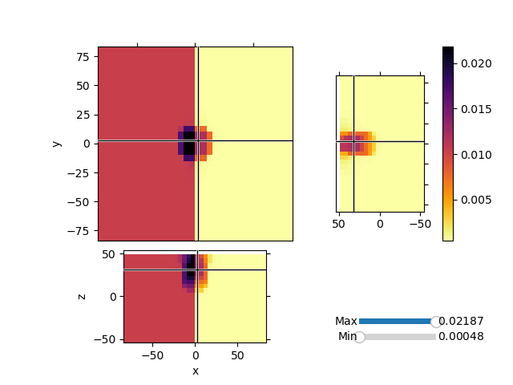

Note
Click here to download the full example code
Maps: ComboMaps¶
Invert synthetic magnetic data with variable background values and a single block anomaly buried at depth. We will use the Sum Map to invert for both the background values and an heterogeneous susceptibiilty model.
1 |
|
- 
Out:
/usr/share/miniconda/envs/deploy/lib/python3.7/site-packages/discretize/utils/code_utils.py:129: FutureWarning: TensorMesh.vectorNx has been deprecated, please use TensorMesh.nodes_x. It will be removed in version 1.0.0 of discretize.
warnings.warn(message, FutureWarning)
/usr/share/miniconda/envs/deploy/lib/python3.7/site-packages/discretize/utils/code_utils.py:129: FutureWarning: TensorMesh.vectorNy has been deprecated, please use TensorMesh.nodes_y. It will be removed in version 1.0.0 of discretize.
warnings.warn(message, FutureWarning)
/usr/share/miniconda/envs/deploy/lib/python3.7/site-packages/discretize/utils/code_utils.py:129: FutureWarning: TensorMesh.vectorNz has been deprecated, please use TensorMesh.nodes_z. It will be removed in version 1.0.0 of discretize.
warnings.warn(message, FutureWarning)
/usr/share/miniconda/envs/deploy/lib/python3.7/site-packages/discretize/base/base_mesh.py:1041: FutureWarning: nCx has been deprecated, please access as mesh.shape_cells[0]
FutureWarning,
/usr/share/miniconda/envs/deploy/lib/python3.7/site-packages/discretize/base/base_mesh.py:1061: FutureWarning: nCy has been deprecated, please access as mesh.shape_cells[1]
FutureWarning,
/usr/share/miniconda/envs/deploy/lib/python3.7/site-packages/discretize/base/base_tensor_mesh.py:690: FutureWarning: hx has been deprecated, please access as mesh.h[0]
"hx has been deprecated, please access as mesh.h[0]", FutureWarning
/usr/share/miniconda/envs/deploy/lib/python3.7/site-packages/discretize/base/base_tensor_mesh.py:707: FutureWarning: hy has been deprecated, please access as mesh.h[1]
"hy has been deprecated, please access as mesh.h[1]", FutureWarning
/usr/share/miniconda/envs/deploy/lib/python3.7/site-packages/discretize/base/base_tensor_mesh.py:724: FutureWarning: hz has been deprecated, please access as mesh.h[2]
"hz has been deprecated, please access as mesh.h[2]", FutureWarning
5576
SimPEG.InvProblem is setting bfgsH0 to the inverse of the eval2Deriv.
***Done using same Solver and solverOpts as the problem***
/usr/share/miniconda/envs/deploy/lib/python3.7/site-packages/discretize/utils/code_utils.py:129: FutureWarning: TensorMesh._cellGradxStencil has been deprecated, please use TensorMesh.stencil_cell_gradient_x. It will be removed in version 1.0.0 of discretize.
warnings.warn(message, FutureWarning)
/usr/share/miniconda/envs/deploy/lib/python3.7/site-packages/discretize/utils/code_utils.py:129: FutureWarning: TensorMesh._cellGradyStencil has been deprecated, please use TensorMesh.stencil_cell_gradient_y. It will be removed in version 1.0.0 of discretize.
warnings.warn(message, FutureWarning)
/usr/share/miniconda/envs/deploy/lib/python3.7/site-packages/discretize/utils/code_utils.py:129: FutureWarning: TensorMesh._cellGradzStencil has been deprecated, please use TensorMesh.stencil_cell_gradient_z. It will be removed in version 1.0.0 of discretize.
warnings.warn(message, FutureWarning)
model has any nan: 0
=============================== Projected GNCG ===============================
# beta phi_d phi_m f |proj(x-g)-x| LS Comment
-----------------------------------------------------------------------------
x0 has any nan: 0
0 1.73e+13 4.55e+06 1.72e-06 3.42e+07 7.47e-03 0
1 8.64e+12 4.71e+06 7.79e-10 4.72e+06 6.26e+01 0
2 4.32e+12 4.69e+06 3.08e-09 4.70e+06 6.35e+01 0
3 2.16e+12 4.63e+06 1.22e-08 4.66e+06 6.34e+01 0 Skip BFGS
4 1.08e+12 4.53e+06 4.75e-08 4.58e+06 6.31e+01 0 Skip BFGS
5 5.40e+11 4.34e+06 1.81e-07 4.44e+06 6.29e+01 0 Skip BFGS
6 2.70e+11 4.00e+06 6.55e-07 4.17e+06 6.28e+01 0 Skip BFGS
7 1.35e+11 3.44e+06 2.19e-06 3.73e+06 6.27e+01 0 Skip BFGS
8 6.75e+10 2.66e+06 6.40e-06 3.09e+06 6.25e+01 0 Skip BFGS
9 3.37e+10 1.80e+06 1.55e-05 2.33e+06 6.21e+01 0 Skip BFGS
10 1.69e+10 1.08e+06 3.06e-05 1.60e+06 6.15e+01 0 Skip BFGS
11 8.43e+09 6.09e+05 5.03e-05 1.03e+06 6.03e+01 0 Skip BFGS
12 4.22e+09 3.42e+05 7.24e-05 6.47e+05 5.87e+01 0 Skip BFGS
13 2.11e+09 2.11e+05 9.37e-05 4.09e+05 5.72e+01 0 Skip BFGS
14 1.05e+09 1.56e+05 1.12e-04 2.74e+05 5.59e+01 0 Skip BFGS
15 5.27e+08 1.32e+05 1.28e-04 1.99e+05 5.38e+01 0 Skip BFGS
16 2.64e+08 1.15e+05 1.50e-04 1.55e+05 5.15e+01 0 Skip BFGS
17 1.32e+08 9.55e+04 2.05e-04 1.23e+05 5.01e+01 0 Skip BFGS
18 6.59e+07 6.98e+04 3.47e-04 9.27e+04 4.94e+01 0 Skip BFGS
19 3.29e+07 4.21e+04 6.48e-04 6.35e+04 4.87e+01 0 Skip BFGS
20 1.65e+07 2.02e+04 1.11e-03 3.86e+04 4.83e+01 0 Skip BFGS
21 8.24e+06 7.94e+03 1.63e-03 2.14e+04 4.83e+01 0 Skip BFGS
22 4.12e+06 2.75e+03 2.06e-03 1.12e+04 4.80e+01 0 Skip BFGS
23 2.06e+06 9.59e+02 2.35e-03 5.80e+03 4.78e+01 0 Skip BFGS
24 1.03e+06 4.09e+02 2.53e-03 3.01e+03 4.77e+01 0 Skip BFGS
25 5.15e+05 2.47e+02 2.64e-03 1.60e+03 4.75e+01 0 Skip BFGS
Reached starting chifact with l2-norm regularization: Start IRLS steps...
eps_p: 0.010176239673747504 eps_q: 0.010176239673747504
eps_p: 0.011966656743038125 eps_q: 0.011966656743038125
26 2.57e+05 1.98e+02 3.73e-03 1.16e+03 2.37e+01 0 Skip BFGS
27 2.57e+05 1.92e+02 4.00e-03 1.22e+03 5.63e+01 0
28 2.57e+05 1.98e+02 4.16e-03 1.27e+03 5.19e+01 0
29 2.57e+05 1.98e+02 4.18e-03 1.27e+03 2.53e+01 6 Skip BFGS
30 2.57e+05 2.05e+02 4.24e-03 1.30e+03 2.72e+01 0
31 2.57e+05 2.17e+02 4.26e-03 1.31e+03 5.97e+01 0
32 2.12e+05 2.23e+02 4.22e-03 1.12e+03 5.93e+01 0
33 1.73e+05 2.25e+02 4.05e-03 9.28e+02 3.33e+01 3 Skip BFGS
34 1.73e+05 2.15e+02 3.96e-03 9.03e+02 3.86e+01 0
35 1.73e+05 2.14e+02 3.79e-03 8.72e+02 5.71e+01 2
36 1.73e+05 2.15e+02 3.61e-03 8.41e+02 5.86e+01 1 Skip BFGS
37 1.73e+05 2.19e+02 3.43e-03 8.14e+02 3.73e+01 2 Skip BFGS
38 1.73e+05 2.17e+02 3.25e-03 7.81e+02 3.52e+01 1
39 1.73e+05 2.14e+02 3.07e-03 7.47e+02 5.81e+01 1
40 1.73e+05 2.14e+02 2.91e-03 7.18e+02 6.04e+01 0 Skip BFGS
41 1.73e+05 2.13e+02 2.81e-03 7.00e+02 3.42e+01 1
42 1.73e+05 2.12e+02 2.70e-03 6.81e+02 3.52e+01 0
43 1.73e+05 2.10e+02 2.59e-03 6.60e+02 5.75e+01 1
44 1.73e+05 2.07e+02 2.43e-03 6.28e+02 5.09e+01 0
45 1.73e+05 2.07e+02 2.31e-03 6.08e+02 3.42e+01 1 Skip BFGS
Reach maximum number of IRLS cycles: 20
------------------------- STOP! -------------------------
1 : |fc-fOld| = 0.0000e+00 <= tolF*(1+|f0|) = 3.4244e+06
1 : |xc-x_last| = 4.0319e-03 <= tolX*(1+|x0|) = 1.0075e-01
0 : |proj(x-g)-x| = 3.4180e+01 <= tolG = 1.0000e-03
0 : |proj(x-g)-x| = 3.4180e+01 <= 1e3*eps = 1.0000e-03
0 : maxIter = 100 <= iter = 46
------------------------- DONE! -------------------------
import discretize
from SimPEG import (
utils,
maps,
regularization,
data_misfit,
optimization,
inverse_problem,
directives,
inversion,
)
from SimPEG.potential_fields import magnetics
import numpy as np
import matplotlib.pyplot as plt
def run(plotIt=True):
H0 = (50000.0, 90.0, 0.0)
# Create a mesh
dx = 5.0
hxind = [(dx, 5, -1.3), (dx, 10), (dx, 5, 1.3)]
hyind = [(dx, 5, -1.3), (dx, 10), (dx, 5, 1.3)]
hzind = [(dx, 5, -1.3), (dx, 10)]
mesh = discretize.TensorMesh([hxind, hyind, hzind], "CCC")
# Lets create a simple Gaussian topo and set the active cells
[xx, yy] = np.meshgrid(mesh.vectorNx, mesh.vectorNy)
zz = -np.exp((xx ** 2 + yy ** 2) / 75 ** 2) + mesh.vectorNz[-1]
# We would usually load a topofile
topo = np.c_[utils.mkvc(xx), utils.mkvc(yy), utils.mkvc(zz)]
# Go from topo to array of indices of active cells
actv = utils.surface2ind_topo(mesh, topo, "N")
actv = np.where(actv)[0]
# Create and array of observation points
xr = np.linspace(-20.0, 20.0, 20)
yr = np.linspace(-20.0, 20.0, 20)
X, Y = np.meshgrid(xr, yr)
# Move the observation points 5m above the topo
Z = -np.exp((X ** 2 + Y ** 2) / 75 ** 2) + mesh.vectorNz[-1] + 5.0
# Create a MAGsurvey
rxLoc = np.c_[utils.mkvc(X.T), utils.mkvc(Y.T), utils.mkvc(Z.T)]
rxLoc = magnetics.Point(rxLoc)
srcField = magnetics.SourceField([rxLoc], parameters=H0)
survey = magnetics.Survey(srcField)
# We can now create a susceptibility model and generate data
model = np.zeros(mesh.nC)
# Change values in half the domain
model[mesh.gridCC[:, 0] < 0] = 0.01
# Add a block in half-space
model = utils.model_builder.addBlock(
mesh.gridCC, model, np.r_[-10, -10, 20], np.r_[10, 10, 40], 0.05
)
model = utils.mkvc(model)
model = model[actv]
# Create active map to go from reduce set to full
actvMap = maps.InjectActiveCells(mesh, actv, np.nan)
# Create reduced identity map
idenMap = maps.IdentityMap(nP=len(actv))
# Create the forward model operator
prob = magnetics.Simulation3DIntegral(
mesh,
survey=survey,
chiMap=idenMap,
actInd=actv,
store_sensitivities="forward_only",
)
# Compute linear forward operator and compute some data
data = prob.make_synthetic_data(
model, relative_error=0.0, noise_floor=1, add_noise=True
)
# Create a homogenous maps for the two domains
domains = [mesh.gridCC[actv, 0] < 0, mesh.gridCC[actv, 0] >= 0]
homogMap = maps.SurjectUnits(domains)
# Create a wire map for a second model space, voxel based
wires = maps.Wires(("homo", len(domains)), ("hetero", len(actv)))
# Create Sum map
sumMap = maps.SumMap([homogMap * wires.homo, wires.hetero])
# Create the forward model operator
prob = magnetics.Simulation3DIntegral(
mesh, survey=survey, chiMap=sumMap, actInd=actv, store_sensitivities="ram"
)
# Make depth weighting
wr = np.zeros(sumMap.shape[1])
print(prob.nC)
# print(prob.M.shape) # why does this reset nC
G = prob.G
# Take the cell number out of the scaling.
# Want to keep high sens for large volumes
scale = utils.sdiag(
np.r_[utils.mkvc(1.0 / homogMap.P.sum(axis=0)), np.ones_like(actv)]
)
for ii in range(survey.nD):
wr += (
(prob.G[ii, :] * prob.chiMap.deriv(np.ones(sumMap.shape[1]) * 1e-4) * scale)
/ data.standard_deviation[ii]
) ** 2.0
# Scale the model spaces independently
wr[wires.homo.index] /= np.max((wires.homo * wr))
wr[wires.hetero.index] /= np.max(wires.hetero * wr)
wr = wr ** 0.5
## Create a regularization
# For the homogeneous model
regMesh = discretize.TensorMesh([len(domains)])
reg_m1 = regularization.Sparse(regMesh, mapping=wires.homo)
reg_m1.cell_weights = wires.homo * wr
reg_m1.norms = np.c_[0, 2, 2, 2]
reg_m1.mref = np.zeros(sumMap.shape[1])
# Regularization for the voxel model
reg_m2 = regularization.Sparse(mesh, indActive=actv, mapping=wires.hetero)
reg_m2.cell_weights = wires.hetero * wr
reg_m2.norms = np.c_[0, 1, 1, 1]
reg_m2.mref = np.zeros(sumMap.shape[1])
reg = reg_m1 + reg_m2
# Data misfit function
dmis = data_misfit.L2DataMisfit(simulation=prob, data=data)
# Add directives to the inversion
opt = optimization.ProjectedGNCG(
maxIter=100,
lower=0.0,
upper=1.0,
maxIterLS=20,
maxIterCG=10,
tolCG=1e-3,
tolG=1e-3,
eps=1e-6,
)
invProb = inverse_problem.BaseInvProblem(dmis, reg, opt)
betaest = directives.BetaEstimate_ByEig()
# Here is where the norms are applied
# Use pick a threshold parameter empirically based on the distribution of
# model parameters
IRLS = directives.Update_IRLS(f_min_change=1e-3, minGNiter=1)
update_Jacobi = directives.UpdatePreconditioner()
inv = inversion.BaseInversion(invProb, directiveList=[IRLS, betaest, update_Jacobi])
# Run the inversion
m0 = np.ones(sumMap.shape[1]) * 1e-4 # Starting model
prob.model = m0
mrecSum = inv.run(m0)
if plotIt:
mesh.plot_3d_slicer(
actvMap * model,
aspect="equal",
zslice=30,
pcolorOpts={"cmap": "inferno_r"},
transparent="slider",
)
mesh.plot_3d_slicer(
actvMap * sumMap * mrecSum,
aspect="equal",
zslice=30,
pcolorOpts={"cmap": "inferno_r"},
transparent="slider",
)
if __name__ == "__main__":
run()
plt.show()
Total running time of the script: ( 0 minutes 50.430 seconds)
Estimated memory usage: 40 MB